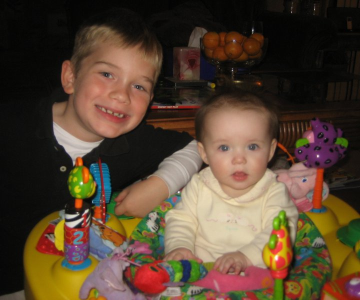

Home
Past
Quiz
Present
Hobbies/Interests
Jake Torgerson's past!
I was born on January 13th, 2004 at 11:00. I was born at Park Nicollet Methodist Hospital, in St. Louis Park, MN

×
My Amazing Selfie
Click the image!